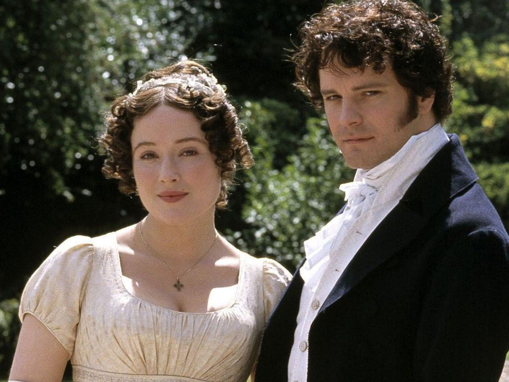
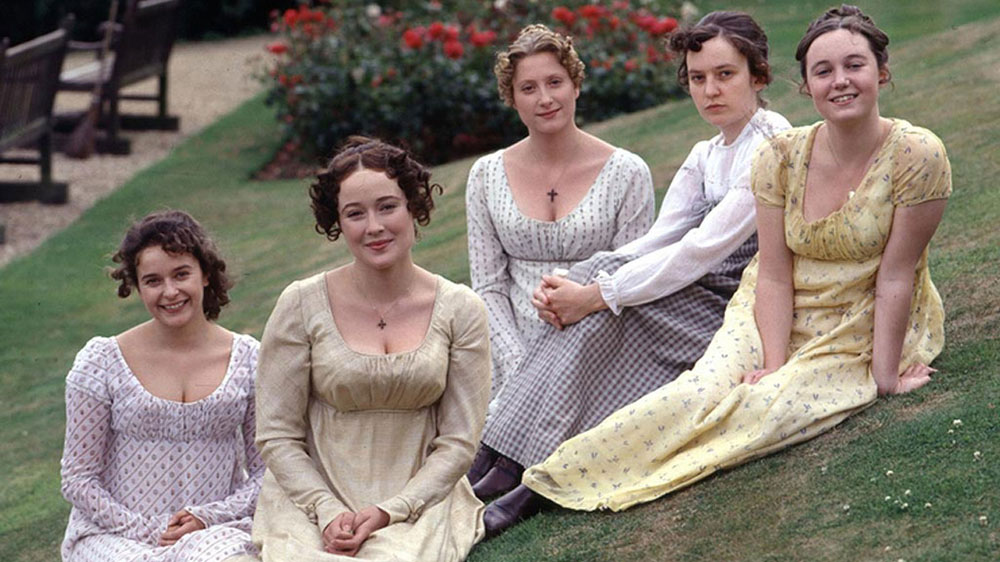
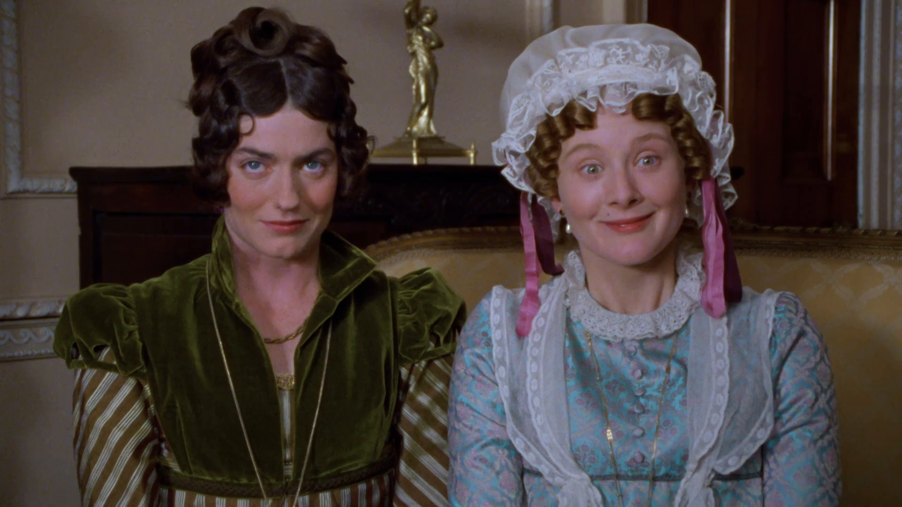

Pride and Prejudice (1995)
במאי: סיימון לנגטון
ז'אנר: דרמה
דעתי:
"העיבוד הקולנועי האהוב עלי ביותר לספר האהוב עליי.
מר דארסי של קולין פירת' גנב את ליבי."
Pride and Prejudice הוא דרמת טלוויזיה בריטית משנת 1995 בת שישה פרקים, שעיבד אנדרו דייויס מהרומן באותו שם של ג'יין אוסטן משנת 1813. ג'ניפר אהל וקולין פירת' כיכבו בתור אליזבת בנט ופיצוויליאם דארסי, בהתאמה. הסדרה הופקה על ידי סו בירטוויסל וביים סיימון לנגטון, והייתה הפקת BBC עם מימון נוסף מרשת A&E האמריקאית. BBC1 שידרה במקור את הפרקים בני 55 הדקות מה-24 בספטמבר עד ה-29 באוקטובר 1995. רשת A&E שידרה את הסדרה בפרקים כפולים בשלושה לילות רצופים החל מה-14 בינואר 1996.
עלילה
אליזבת בנט ואחיותיה מנסות לנווט בעולם האהבה והחברה הגבוהה בעידן שבו המעמד והכסף חשובים.
סצנות מהסרט - ספוילרים!
- 
- 
- 